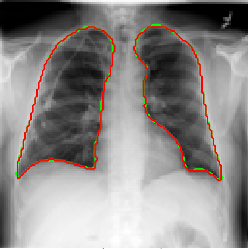
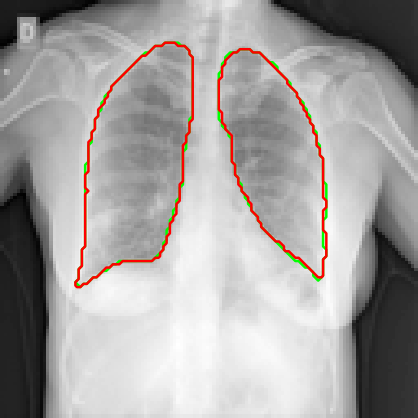

A U-Net that reads chest X-rays
It draws the lungs pixel by pixel, then says whether they look normal, show a lung opacity, or show COVID-19.
Tuesday, 24 November 2026
Group: Member 1, Member 2, Member 3

1. BackgroundWhere U-Net came from
The problem. In 2015 a deep network could say what is in a picture. Biomedical work needed more: which pixels belong to a cell, an organ or a tumour. And a hospital does not have a million labelled scans.
The idea. Olaf Ronneberger, Philipp Fischer and Thomas Brox at the University of Freiburg built a network shaped like the letter U. It squeezes the image to learn what is there, then expands it again to learn where, passing detail across through skip connections.
It trained on only about 30 annotated microscope images, with heavy elastic augmentation, and won the ISBI 2015 cell tracking challenge.
1. BackgroundOne X-ray in, two answers out
Lung mask
Which pixels are lung. This is segmentation, the job U-Net was made for.
128 x 128 maskDiagnosis
One of three classes, read from the deepest layer of the network.
3 classesCOVID-19 Radiography Database: 6,000 images, 2,000 per class, resized to 128 x 128. Every image comes with a lung mask.
Train, validation, test. Each split holds the same number of every class (1,400 / 300 / 300).
2. ArchitectureThe U, built from ResNet-18
click a block
2. ArchitectureWhat sets U-Net apart
Skip connections
Each decoder step receives the encoder map of the same size. Fine edges that pooling threw away come back for the mask.
A mirrored decoder
Four downsampling steps, four upsampling steps. The output ends up as large as the input, so every pixel gets a label.
Works with little data
Pixels are the training signal, not whole images, and the original paper added elastic deformations on top.
| U-Net, 2015 | This project | |
|---|---|---|
| Encoder | Plain conv blocks, trained from scratch | ResNet-18 pretrained on ImageNet |
| Convolutions | No padding, output smaller than input | Padding, mask matches the input |
| Heads | Mask only | Mask plus a 3-class diagnosis head |
2. ArchitectureBorrowing eyes from ImageNet
Load the encoder
torchvision ResNet-18, weights IMAGENET1K_V1. It already knows edges, textures and shapes.
Make it see gray
X-rays have one channel, ImageNet has three. The first convolution is summed over R, G and B, so a gray image gets the same response.
Fine-tune everything
The whole network trains, but the pretrained part moves ten times slower than the new decoder.
Learning rate per part
1e-41e-3Small steps keep the pretrained features from being erased.
Recipe: AdamW, cosine schedule, batch 32, 12 epochs. Loss is cross-entropy for the class plus binary cross-entropy for the mask.
3. ApplicationsWherever a pixel needs a label
Medical imaging
Outlining lungs, organs, tumours, retinal vessels and cells in X-ray, CT, MRI and microscopy. Doctors check the outline instead of trusting a bare label. nnU-Net, a self-configuring U-Net, is a standard baseline in medical challenges.
Self-driving cars
Labelling each pixel as road, lane, car or pedestrian. U-Net style encoder-decoders are a common starting point for this.
Satellite images
Finding buildings, roads, crops and flooded land from above.
Phone apps
Portrait mode and background removal. Small U-Net variants run on mobile chips.
Image generators
Stable Diffusion uses a U-Net to remove noise step by step.
4. ImplementationPyTorch, CPU only, 46 minutes
# one expanding step of the U class UpBlock(nn.Module): def __init__(self, in_ch, skip_ch, out_ch): self.up = nn.ConvTranspose2d(in_ch, out_ch, 2, stride=2) self.conv = double_conv(out_ch + skip_ch, out_ch) def forward(self, x, skip): x = self.up(x) # 2x bigger x = torch.cat([x, skip], dim=1) # skip connection return self.conv(x) # forward pass returns BOTH outputs mask_logits, class_logits = model(xray)
data.pyDownloads the dataset, builds the balanced split, augments image and mask togethermodel.pyU-Net with ResNet-18 encoder, Dice score, save and loadtrain.pyTransfer-learning loop, keeps the best validation epochevaluate.pyAccuracy, confusion matrix, Dice and IoU on the test setpredict.pyMask and class for any new X-rayNo flips in augmentation, because the heart sits on the left
4. ImplementationResults on 900 unseen images
Accuracy per epoch
40 of the 57 mistakes swap normal and lung opacity. Both come from the same hospital source, so the model has no shortcut there. COVID scores best, which matches the source warning.
4. ImplementationGreen is the truth, red is the U-Net
normal
the two outlines almost cover each other
What we would do nextWhat the numbers do not say
COVID may be a source detector
The COVID images come from other collections than the other two classes. Some of that 96% recall could be framing and text, not lungs.
test on a new hospitalNormal and opacity blur
Same source, no shortcut, and 40 of 57 errors. This is the honest difficulty of the task.
more resolution than 128 pxIt overfits a little
Training accuracy reaches 98% while validation settles near 92%. The mask does not overfit: both Dice curves stay together.
stronger augmentationNot a medical device
It is a course project on a public dataset. The worst test mask still scored Dice 0.76, so a doctor must review outlines.
a tool to assist, not to decideTakeaways
- U-Net keeps detail by wiring encoder maps straight into the decoder.
- Transfer learning let a CPU reach 93.7% accuracy and Dice 0.977 in 46 minutes.
- The mask shows where the model looks, which makes the diagnosis easier to question.
- Results are real but limited, mostly by the data sources.

Questions?
Code and results: the unet_chest_xray repository. Paper: Ronneberger, Fischer, Brox, 2015.